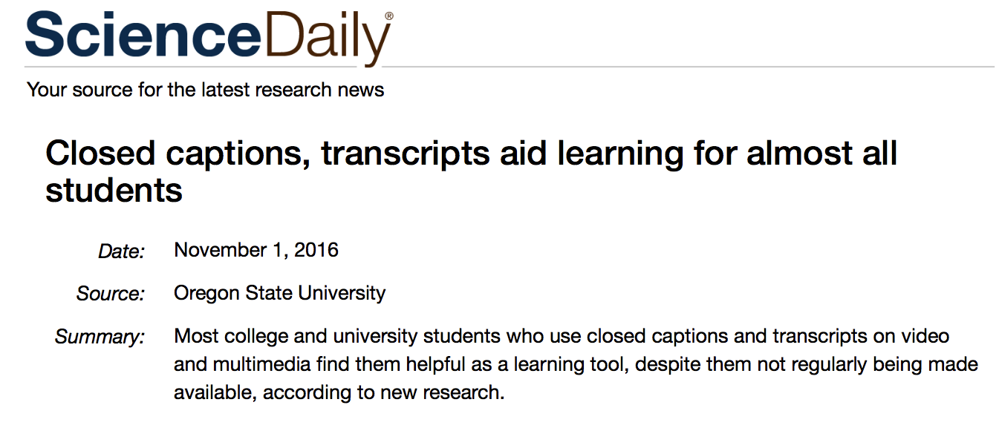
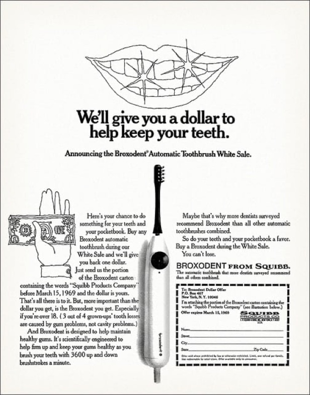

Accessibility
Today
- JS Modules
- Accessibility
Recap from last class
- JS Modules
JS Modules
- We can split JS functionalities across modules
- You can then
importmodules as necessary - Allows better code management
A module is a separate JS file
- Other modules then can use features from a given module
- Variables, functions, …
JS Modules
- Open Activity 21 in VS Code
- Two modules
main.jsdayname.js
Making features available to other modules
in dayname.js
const names = ["Sunday", "Monday", "Tuesday"]
export function dayName(number) {
return names[number];
}
export function dayNumber(name) {
return names.indexOf(name);
}
export in front of features will make them available to
other modules
You can use a single
export statement
const draw = () => {};
const reportArea = 16.5;
export { draw, reportArea };
a single export statement at the end of the module with
a comma-separated list of the features
Importing features from a module
in main.js
import {dayName} from "./dayname.js";The dot (.) in "./dayname.js" indicates
current folder
You can also rename imported features
import { name as squareNameOne } from "shapes";You can import all features as well
import * as Module from "./modules/module.js";
Module.function1();
Module.function2();Applying the module to your HTML
index.html
<script type="module" src="main.js"></script>Must include type="module"
Today
- JS Modules
- Accessibility
Todo
- Open Activity 21 in VS Code
- Two modules
- Try to access the names variable from
dayname.jsinmain.js- e.g., print using
console.log
- e.g., print using
- What happens?
Todo
- Rewrite
dayname.jsto use a singleexportstatement namesshould also be exported
Todo
- Rewrite
main.jsto useimport * as ...syntax
Todo
- Open Activity 22 in VS Code
- Check Dev Tools –> Console
- Can you fix the errors?
Hints
- Export features
canvas.jscreate,createReportList
square.jsdraw,reportArea,reportPerimeter,randomSquare
Hints
- Import those features in
main.jsfromcanvas.jsandsquare.js
Today
- JS Modules
- Accessibility
Accessibility
Commonly abbreviated as a11y
Accessibility
- Nearly 20% of
individuals in the US have some form of disability
- 1 billion people around the world
Users might have specific requirements and constraints
- Visual impairment
- Hearing impairment
- Physical impairment
- Speech impairment
- Seizures
- Cognitive and learning disabilities
Visual impairment
Accessibility
As a designer and developer, it is our responsibility to provide ways for these users to engage with our system
Better accessibility results in improved usability for everyone
Better accessibility === Improved usability for all
Closed captioning and transcripts
- Initially designed for deaf users
- Almost every college student has used captioning and transcripts

Better accessibility === Improved usability for all
Curb cuts
- Initially for wheelchair users
- Improves experience for all (pedestrians, cyclists, …)

Better accessibility === Improved usability for all
Electric toothbrush
- Initially designed for
- Patients with limited motor skills
- Orthodontic patients (e.g., with braces)

We all can benefit from better accessibility
- Temporarily disabled
- Broken wrist
- Situationally disabled
- Unable to play audio in public for a video message
Accessibility is about enabling all of your users
- Failing to make your product accessible means potentially excluding
a significant number of users
- Business implications
Accessibility might be legally required for some products
- Requirement for public sector entities
- Government funded programs, nonprofits, …
- Might be required for some private sector companies
Accessibility might be legally required for some products
“In the US, Over ten lawsuits are filed daily focused on digital accessibility”
Accessibility
- Principles
- Guidelines
- Tools
Accessibility principles
Perceivable, Operable, Understandable, and Robust (POUR)
Perceivable
- All essential information must be perceivable to
all users
- For different types of disabilities (e.g., visual, mobility, …)
Making information perceivable to all users
- Examples
- Text alternatives to essential icons and images
- Captions
- Not relying on only color to convey meaning
Operable
- Users must be able to operate the interface
- Can’t require interaction that a user is unable to perform
Operable by all users
- Examples
- Keyboard and touchscreen support to all active elements
- Giving users enough time to fill out a form
Understandable
- Information and the interface operation must be understandable
- Examples
- Has predictable navigation
- Error messages are clear and easy to resolve
Robust
- Accessible to users using both older and future technologies
- Examples
- Works for different screen reader technologies
- Content and functions work for different device sizes
Accessibility
- Principles
- Guidelines
- Tools
Semantic html leads to better accessibility
<div>Play video</div>üëéüèæ Don‚Äôt
<button>Play video</button>üëçüèæ Do
Use the correct HTML elements
Structure page sections logically
<header><nav><main><article><aside><footer>- …
Structure page sections logically
<header>
<h1>Header</h1>
</header>
<nav>
<!-- main navigation in here -->
</nav>
<!-- Here is our page's main content -->
<main>
<!-- It contains an article -->
<article>
<h2>Article heading</h2>
</article>
<aside>
<!-- aside content in here -->
</aside>
</main>
<footer>
<!-- footer content in here -->
</footer>
Use semantic UI controls whenever possible
- Use buttons, links, and form controls
- Provides default keyboard accessibility
Use semantic UI controls whenever possible
<!-- Using <div> for buttons -->
<div data-message="First button">Click me!</div>
<div data-message="Second button">Click me too!</div>üëéüèæ Don‚Äôt. Use buttons instead
Use meaningful text labels
- Button and link text labels should be understandable and distinctive
- Try to avoid using “Click here”
- Context might be lost for screen reader users
Make sure your labels make sense out of context
Try to avoid using “Click here”
Whales are really awesome creatures.
To find out more about whales,
<a href="whales.html">click here</a>.
üëéüèæ Don‚Äôt
Whales are really awesome creatures.
<a href="whales.html">Find out more about whales</a>.üëçüèæ Do
Use Form label to provide context
Fill in your name: <input type="text" id="name" name="name" />üëéüèæ Don‚Äôt
<label for="name">Fill in your name:</label>
<input type="text" id="name" name="name" />üëçüèæ Do
Text alternatives
- Images can’t be seen by people with visual impairment
- We should provide
altdescription for the screen reader
Provide
alt description for non-decorative images
<img src="old-main.png" />üëéüèæ Don‚Äôt
<img
src="old-main.png"
alt="The Penn State Old Main building"/>üëçüèæ Do
Provide
alt description for non-decorative images
- Describe the image and what it conveys visually
- Should be brief and concise
- Do not duplicate the surrounding text
Empty alt is
ok for decorative images
<img src="article-icon.png" alt="" />When the image is only for visual decoration
Color
Don’t rely on only color to convey information
Click the green button for next itemüëéüèæ Don‚Äôt
Color contrast
- The foreground and background color contrast is important
- Make sure that people with color blindness can read the content
Accessibility
- Principles
- Guidelines
- Tools
Firefox (Dev Tools –> Accessibility)

Chrome (Dev Tools –> Lighthouse)

Todo
- Open Activity 23 in Chrome
- Run an accessibility audit
- Dev Tools –> Lighthouse
- Fix the issues